J.R. Charton
fl.1920s – 1940s
Artist Biography
J.R. Charton was an English born artist who emigrated to Malaya and made his career there. In 1920 he was living at 19 Winchester House, Singapore and advertising drawings and photographs for commercial and other purposes. In 1922 he embarked on an epic walk with a Lieutenant Alexander from Singapore to London, progress on which was reported in the newspapers. Charton specialised in painting Malay scenes, particularly landscapes, and was elected a Fellow of the Royal Society of Arts (FRSA). He was a prize winner at the 1933 Malayan Exhibition at Kuala Lumpur. His commercial drawing also took off in 1933 with a commission for five drawings of Malay scenes for posters for the Federal Malay States Railways and in 1938 he provided the illustrations for the book ‘A Junior Geography of Malaya’. When Singapore fell to the Japanese in 1942 his wife Mollie was evacuated to the UK and Charton interned in the city. A portrait by William Haxworth of him in Sime Road Internment Camp is in the National Archives of Singapore. Charton survived the war and in July 1946 an exhibition was mounted in Singapore of some 100 sketches and watercolours by the “well-known Malayan artist” (Singapore Times) completed during his internment. His work is held by the Singapore National Library and the National Gallery of Australia.
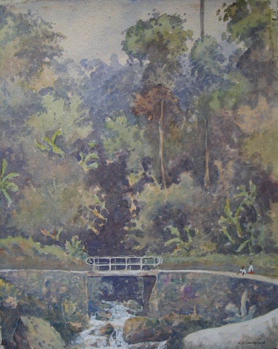
The Gap, Raub Road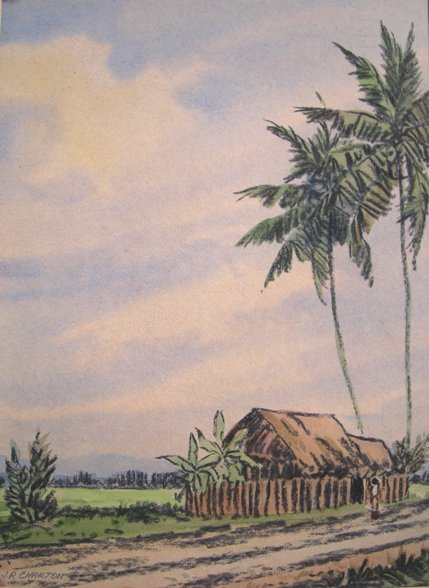
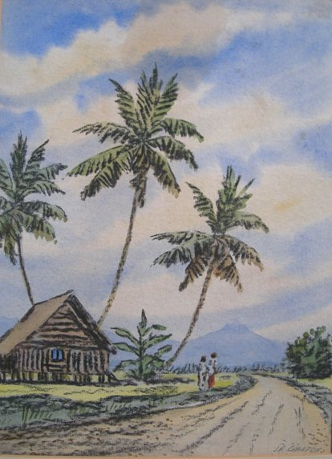
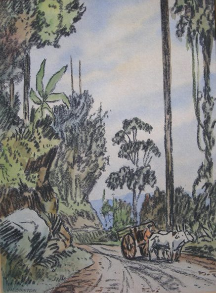
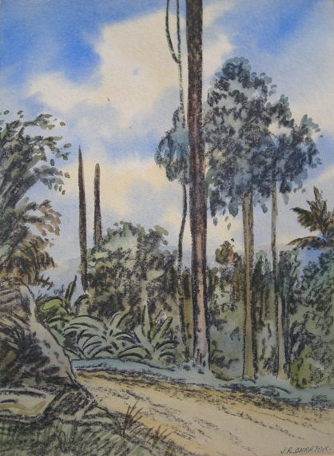
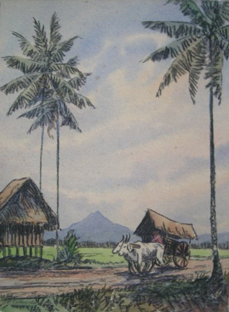
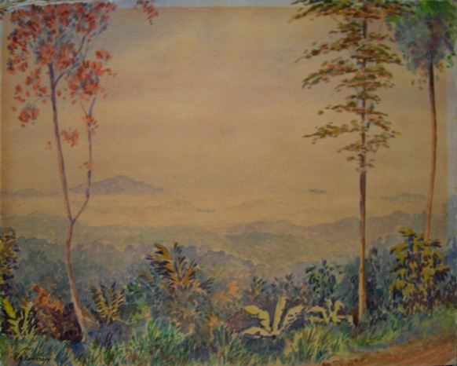
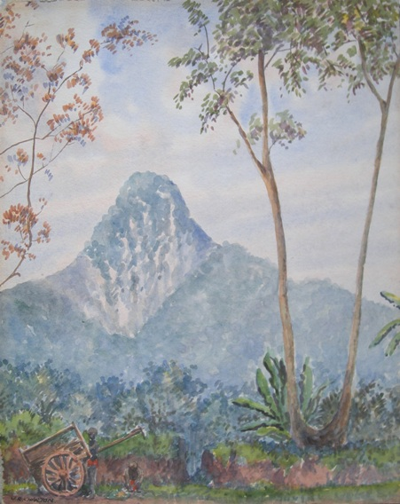
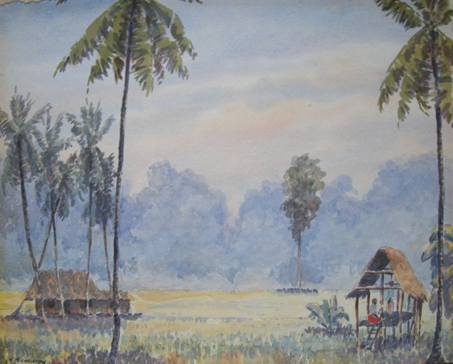
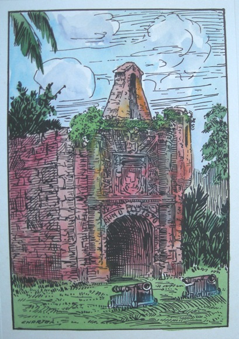
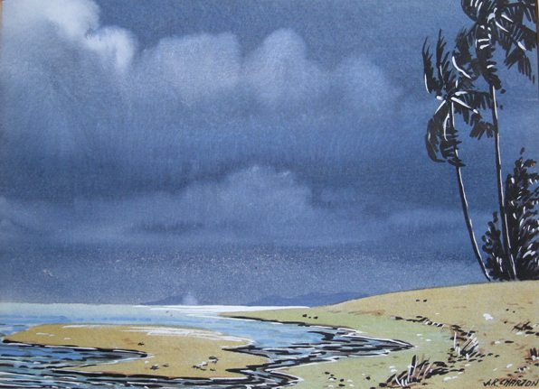